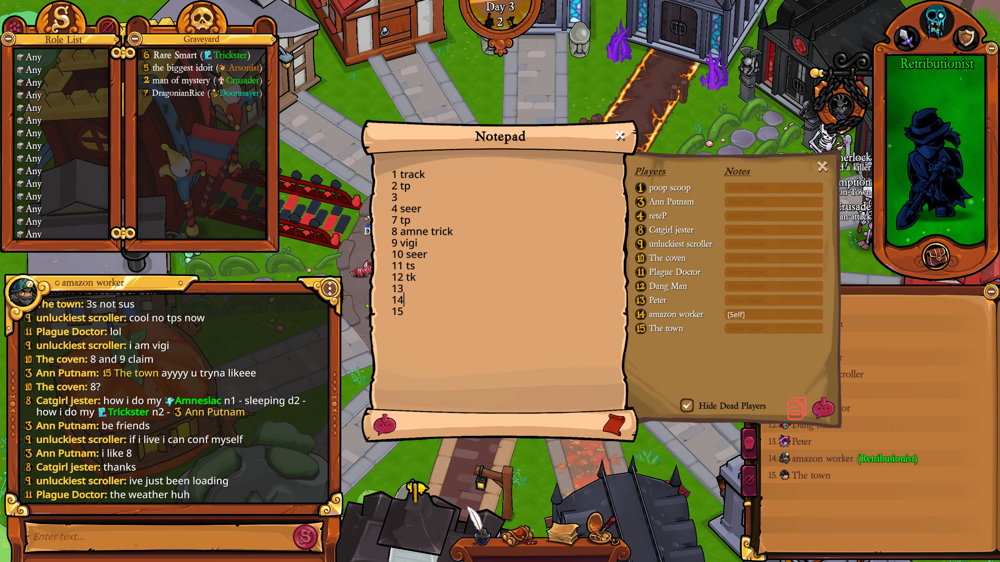

About Your ToS2 Fakeclaim
Word count: < Retrieving word count... >
What On Earth is ToS2?
ToS2, or Town of Salem 2, is a social deduction game. It is similar to the game Mafia that you play with your friends, the game Werewolf you play with your now-former friends, or that one hilariously imbalanced game they had in Jackbox Party Pack 6.
It averages 400 players at peak hours, thus making it around the fifth-most played social deduction game on Steam.

It is the most complex game out there that sharea a mechanical skill ceiling with Microsoft Word. The game features 60 roles across 5 factions (or 11 if you count #Neutral roles as seperate teams (or 13 if you count outliers (or 16 if you count the additions in the popular variant BToS2, counting Neutral Pariahs as one... wait, what was I talking about?)))
The game is infamously meta, with players expected to know all of the lingo, all of the roles, and all of the interactions to stand a chance past making it past VFA (here's hoping you know what that is!). Usually you can sneak by in social deduction games as an evil role by staying quiet. Well, try that here and you will be getting a friendly house call from your local Vigilante by Night 3.
It is a hard, frustrating, and anxiety-inducing experience from front to end.
Anyways,
Fakeclaims and You
If you play Town of Salem 2, you are going to have to play an evil role at some point. As an evil role, you need to have a fake claim, or at least an alignment, ready by Day 2. That's because on Day 2, people will do VFA, or :Vote For Alignment:.
VFA is when everyone is expected to claim a Town alignment (eg. #Town Investigative, #Town Support). Nonclaimers will be voted up to the stand, and if they continue to resist, get hanged.
Now, as an evil, this is pretty important! Claiming an alignment will lock you into a playstyle and role archetype to fake for the rest of the game. If you claim #Town Protective, you better have a good reason prepared if a #Lookout doesn't see you protecting the #Town Power claim like you should be. (And no, panic claiming #Oracle on stand will not work.)
Before we get started, I want to introduce what I call the Three Exceptions of Fakeclaiming. Learning these rules pretty much opened the world as my oyster starting out.
-
Your claim doesn't have to be perfect.
- A common phrase is "Town of Salem players can't read". This is true. I have posted D1 #Psychic wills with three names instead of two multiple times and no one called me out. If you claim to visit 15 on N2 but the dead #Lookout's will contradicts you, just don't bring it up. Chances are good no one will notice anyways.
-
Your claim doesn't have to last forever.
- Your claim will, in most games, with a ~normal rolelist, only need to last you four to six nights. Before then, your team will either have majority, your team has been wiped off the face of the earth to the point where it doesn't matter if you get outed, or the game has entered a kingmaker or evil-majority state where everyone knows what everyone else is already. Even if you can't make it that long, you can try a confirmation play.
-
It's okay to get caught.
- If you claim #Investigator, post D2, then immediately get proven fake by calling an open #Pirate claim NC, it's fine. No, it doesn't mean fakeclaiming #Investigator is a bad idea. No, it doesn't mean you necessarily did anything wrong. What it means is that you got unlucky. Shit happens. It's part of the game. Don't dwell on it.
Alignment Claims
Beginning of the game, D2. You are expected to claim an :Alignment:. This is going to inform how you need to act for the rest of the game!
Your 'real' role will also need to be within that alignment (see the next section for exceptions to this), and so you will need to write a will matching it. If you come under fire or the town doesn't have anything better to do, you will be asked to provide it, and you will be hanged if you can't.
The subtleties and nuances of faking an alignment come with time and experience. In the meantime, here are a few quick pointers for each:
- #Town Investigative
- Post right away. Don't wait. If you are a #Lookout or #Tracker claim, you might get away with holding on your information to try and 'catch' an 'evil' lacking. Don't reveal bugs as #Spy unless you have info.
- Act on your information. If your #Psychic's even-night will target dies, there is now a 1f1 with a guaranteed 'evil'. You will need to at least pay lip service to it. But, if the town is sufficiently stupid, you can get away with staying silent (see Exception #3).
- Be proactive. As an information-gatherer, the town expects you to follow up on leads, up suspicious players, and contribute heavily to the discussion. Even if you just follow what someone else says, say it.
- Be wary of :Unknown Obstacle:s. If there is a known #Socialite, #Poisoner, or #Jailor, it can be worth waiting a fraction of a second before posting to see if any of the other players report a UO.
- Go on realistic people. If you're a #Sheriff claim and you claim to go on the confirmed #Vigilante, you will get voted. (See Exception #3).
- #Town Protective
- Obviously, if the person you claimed to protect died that night, switch your target in your will.
- You should try to coordinate with townies during the day. If someone asks to chain, be careful. If you accept, they will write it in their will and you better have a good excuse if they die later. If not, you need a good reason not to chain.
- TPs are generally a proof-claim (more on what that means later). Realize people will see you as fake until you have a confirmed save.
- #Town Support
- TS is a versatile alignment, but if you are not faking a role proof-claim (eg. #Tavern Keeper), you will be seen as fake unless proven otherwise.
- Since it spans the widest range of roles, you will need to act how your role would act. Yippee.
- #Town Killing
- This is one role where
- Since it spans the widest range of roles, you will need to act how your role would act. Yippee.
- #Town Power
-
Take charge. If you open claim #Town Power, you are telling the town that you are a strong town role that can lead the discussion.
- Roles that wouldn't necessarily do this like #Monarch might claim #Town Support or #Town Protective instead for this exact reason.
- You will be asked to reveal or prove yourself at some point before D5! Plan to win before then, or you will get hanged. Or if you're #Arsonist, hit a fat 5 player ignite on N4, and then get hanged.
- Otherwise, for those first few days, you will be practically immune to getting hanged.
- See next section for more information about :Copout:ing.
-
Take charge. If you open claim #Town Power, you are telling the town that you are a strong town role that can lead the discussion.
Copouts
So the million dollar question. "It's Day 1 and I need to claim an alignment! What do I fakeclaim?"
#Cleric. If you're nonvisiting, then #Deputy.
Okay, now let's be a little more creative.
The Easy Claims
#Cleric and #Deputy are two of the easy claims. They are claims, that by design, almost any evil role can fake to a decent level of success, and with almost no effort.
Before we talk about role-specific fakes (which, for some reason, seem to be the be-all-and-end-all for newer players), we should talk about the easy claims, since they aren't called easy for no reason. They can do the job, and you will probably win pretty often relying on them. Here is a list of all the claims I would call easy.
- #Sheriff
- #Bodyguard
- #Cleric
- #Oracle
- #Deputy
- #Trickster
- #Admirer
There are caveats here. See, though they may be easy, people know they are easy. If a hint of suspicion comes onto one of your calls as #Sheriff, no matter how vehemently you blame #Soul Collector or #Enchanter :Frame:ing your target, you are getting hanged. If it's between you- the #Admirer claim- and the #Socialite, you are going down ten times out of ten.